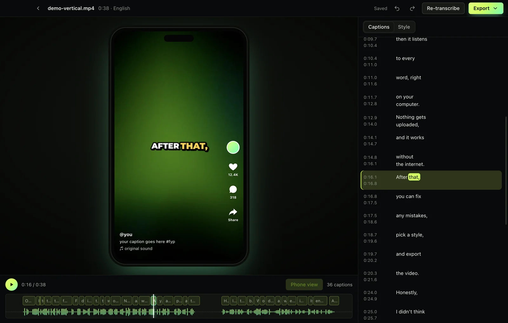
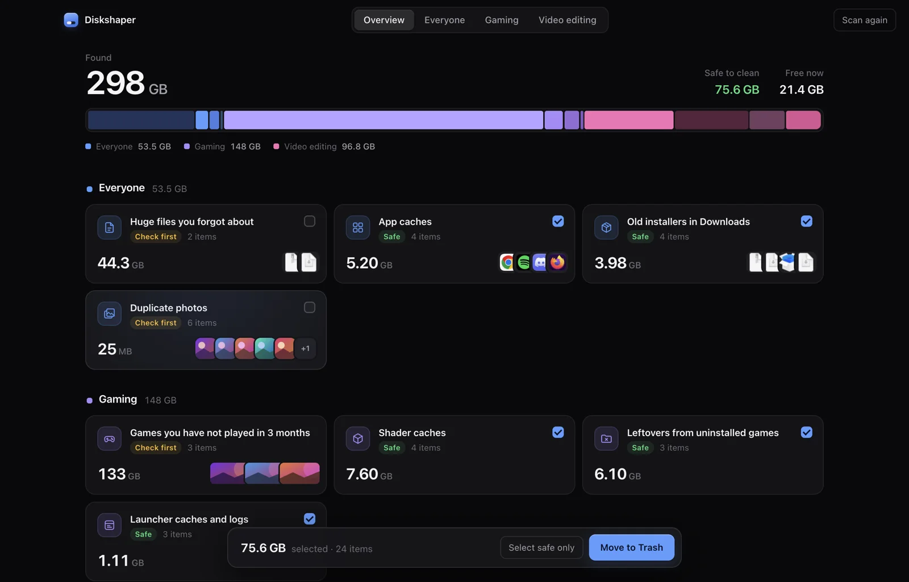
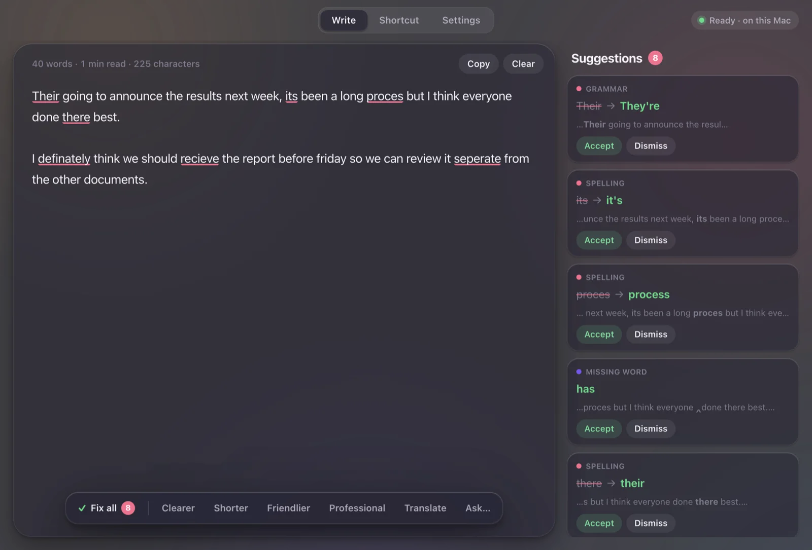

Fileshaper
Compressez des vidéos pour Discord, convertissez les photos d’iPhone, fusionnez et signez des PDF. Une seule boîte à outils, entièrement hors ligne.
v1.2.1 · Mac et Windows · Site officiel : fileshaper.app
De petites applis soignées pour Windows et Mac qui font bien une seule chose, entièrement sur votre ordinateur. Pas de pub, pas de compte, pas de filigrane.
Démo animée : Fileshaper compresse une vidéo de 214 Mo à 9,6 Mo, sur l’ordinateur.
Démo animée : Captionshaper écrit des sous-titres calés mot par mot sur une vidéo, hors ligne.
Démo animée : Diskshaper analyse un disque, trouve 75 Go de désordre et met ce qui est sûr à la Corbeille.
Démo animée : Writeshaper corrige les fautes d’un e-mail sélectionné, sur l’ordinateur, puis le recolle.
Chacune remplace un site web ou un abonnement qui veut vos fichiers, votre temps ou votre argent.
Compressez des vidéos pour Discord, convertissez les photos d’iPhone, fusionnez et signez des PDF. Une seule boîte à outils, entièrement hors ligne.
v1.2.1 · Mac et Windows · Site officiel : fileshaper.appDes sous-titres calés mot par mot pour n’importe quelle vidéo, écrits par un modèle vocal sur votre propre ordinateur. SRT, VTT ou incrustés.
v1.1.2 · Mac et Windows · Site officiel : captionshaper.app
Voyez ce qui dévore votre stockage, des caches de shaders et restes Steam aux caches Premiere et photos en double. Nettoyez seulement ce qui est sûr, toujours vers la Corbeille.
v1.0.2 · Mac et Windows · Site officiel : hollowbit.dev/diskshaper
Sélectionnez du texte dans n’importe quelle appli, appuyez sur un raccourci : il est corrigé, ou rendu plus clair, plus court, plus aimable ou plus professionnel. Le modèle tourne sur votre ordinateur.
v1.0.0 · Mac et Windows · Site officiel : hollowbit.dev/writeshaper
Pas d’essai, pas de version « pro », pas de données récoltées en douce. Ces règles valent pour chaque appli Hollowbit et pour ce site.
Les fichiers sont ouverts, modifiés et enregistrés sur votre ordinateur.
Coupez le Wi-Fi. Tout fonctionne encore.
Ni dans les applis, ni sur les sites.
Vous ne devriez pas avoir à vous inscrire pour convertir un fichier.
Ni statistiques ni cookies, y compris sur ce site.
Chaque ligne est sur GitHub.
Des installeurs pour Mac et Windows, directement depuis GitHub.